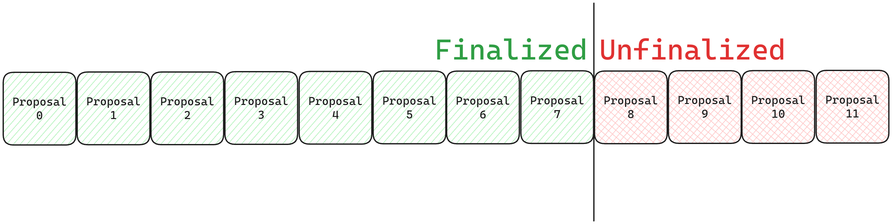

Bridge Integration
Table of Contents
- Overview
- Legacy Semantics
- FPAC
OptimismPortalMods Specification - Permissioned
FaultDisputeGame
Overview
With fault proofs, the withdrawal path changes such that withdrawals submitted to the OptimismPortal are proven
against output proposals submitted as a FaultDisputeGame prior to being finalized. Output
proposals are now finalized whenever a dispute game resolves in their favor.
Legacy Semantics
The OptimismPortal uses the L2OutputOracle in the withdrawal path of the rollup to allow users to prove the
presence of their withdrawal inside of the L2ToL1MessagePasser account storage root, which can be retrieved by
providing a preimage to an output root in the oracle. The oracle currently holds a list of all L2 outputs proposed to
L1 by a permissioned PROPOSER key. The list in the contract has the following properties:
- It must always be sorted by the L2 Block Number that the output proposal is claiming it corresponds to.
- All outputs in the list that are >
FINALIZATION_PERIOD_SECONDSold are considered "finalized." The separator between unfinalized/finalized outputs moves forwards implicitly as time passes.

Currently, if there is a faulty output proposed by the permissioned PROPOSER key, a separate permissioned
CHALLENGER key may intervene. Note that the CHALLENGER role effectively has god-mode privileges, and can currently
act without proving that the outputs they're deleting are indeed incorrect. By deleting an output proposal, the
challenger also deletes all output proposals in front of it.
With the upgrade to the Fault Proof Alpha Chad system, output proposals are no longer sent to the L2OutputOracle, but
to the DisputeGameFactory in order to be fault proven. In contrast to the L2OO, an incorrect output proposal is not
deleted, but proven to be incorrect. The semantics of finalization timelines and the definition of a "finalized" output
proposal also change. Since the DisputeGameFactory fulfills the same role as the L2OutputOracle in a post fault proofs
world by tracking proposed outputs, and the L2OO's semantics are incompatible with the new system, the L2OO is no
longer required.
FPAC OptimismPortal Mods Specification
Roles - OptimismPortal
Guardian: Permissioned actor able to pause the portal, blacklist dispute games, and change theRESPECTED_GAME_TYPE.
New DeployConfig Variables
| Name | Description |
|---|---|
DISPUTE_GAME_FINALITY_DELAY_SECONDS | The amount of time given to the Guardian role to blacklist a resolved dispute game before any withdrawals proven against it can be finalized, in case of system failure. |
PROOF_MATURITY_DELAY_SECONDS | Formerly FINALIZATION_PERIOD_SECONDS in the L2OutputOracle, defines the duration that must pass between proving and finalizing a withdrawal. |
RESPECTED_GAME_TYPE | The dispute game type that the portal uses for the withdrawal path. |
Data Structures
Withdrawals are now proven against dispute games, which have immutable "root claims" representing the output root
being proposed. The ProvenWithdrawal struct is now defined as:
/// @notice Represents a proven withdrawal.
/// @custom:field disputeGameProxy The address of the dispute game proxy that the withdrawal was proven against.
/// @custom:field timestamp Timestamp at which the withdrawal was proven.
struct ProvenWithdrawal {
IDisputeGame disputeGameProxy;
uint64 timestamp;
}
State Layout
Legacy Spacers
Spacers should be added at the following storage slots in the OptimismPortal so that they may not be reused:
| Slot | Description |
|---|---|
52 | Legacy provenWithdrawals mapping. Withdrawals proven against the L2OutputOracle's output proposals will be deleted upon the upgrade. |
54 | Legacy L2OutputOracle address. |
New State Variables
DisputeGameFactory address
/// @notice Address of the DisputeGameFactory.
/// @custom:network-specific
DisputeGameFactory public disputeGameFactory;
Respected Game Type
/// @notice The respected game type of the `OptimismPortal`.
/// Can be changed by Guardian.
GameType public respectedGameType;
Respected Game Type Updated Timestamp
/// @notice The timestamp at which the respected game type was last updated.
uint64 public respectedGameTypeUpdatedAt;
New ProvenWithdrawals mapping
/// @notice A mapping of withdrawal hashes to `ProvenWithdrawal` data.
mapping(bytes32 => ProvenWithdrawal) public provenWithdrawals;
Blacklisted DisputeGame mapping
/// @notice A mapping of dispute game addresses to whether or not they are blacklisted.
mapping(IDisputeGame => bool) public disputeGameBlacklist;
proveWithdrawalTransaction modifications
Proving a withdrawal transaction now proves against an output root in a dispute game, rather than one in the
L2OutputOracle.
Interface
The type signature of the function does not change, but the purpose of the second argument transitions from providing
an index within the L2OutputOracle's l2Outputs array to an index within the DisputeGameFactory's list of created
games.
/// @notice Proves a withdrawal transaction.
/// @param _tx Withdrawal transaction to finalize.
/// @param _disputeGameIndex Index of the dispute game to prove the withdrawal against.
/// @param _outputRootProof Inclusion proof of the L2ToL1MessagePasser contract's storage root.
/// @param _withdrawalProof Inclusion proof of the withdrawal in L2ToL1MessagePasser contract.
function proveWithdrawalTransaction(
Types.WithdrawalTransaction memory _tx,
uint256 _disputeGameIndex,
Types.OutputRootProof calldata _outputRootProof,
bytes[] calldata _withdrawalProof
) external whenNotPaused;
New Invariants - proveWithdrawalTransaction
Trusted GameType
The DisputeGameFactory can create many different types of dispute games, delineated by their GameType. The game
type of the dispute game fetched from the factory's list at _disputeGameIndex must be of type RESPECTED_GAME_TYPE.
The call should revert on all other game types it encounters.
Changed Invariants - proveWithdrawalTransaction
Re-proving withdrawals Users being able to re-prove withdrawals, in special cases, is still necessary to prevent user withdrawals from being bricked. It is kept to protect honest users when they prove their withdrawal inside of a malicious proposal. The timestamp of re-proven withdrawals is still reset.
- Old: Re-proving is allowed if the output root at the proven withdrawal's
l2OutputIndexchanged in theL2OutputOracle. - New: Re-proving is allowed if the output proposal's dispute game has resolved against the output root's favor, the respected game type changed since the withdrawal was proven, or the game that was proven against was blacklisted.
finalizeWithdrawalTransaction modifications
Finalizing a withdrawal transaction now references a DisputeGame to determine the status of the output proposal that
the withdrawal was proven against.
New Invariants - finalizeWithdrawalTransaction
Trusted GameType
The DisputeGameFactory can create many different types of dispute games, delineated by their GameType. The game
type of the dispute game fetched from the factory's list at _disputeGameIndex must be of type RESPECTED_GAME_TYPE.
The call should revert on all other game types it encounters.
Respected Game Type Updated A withdrawal may never be finalized if the dispute game was created before the respected game type was last updated.
Dispute Game Blacklist
The Guardian role can blacklist certain DisputeGame addresses in the event of a system failure. If the address of
the dispute game that the withdrawal was proven against is present in the disputeGameBlacklist mapping, the call
should always revert.
Dispute Game Maturity See "Air-gap"
Changed Invariants - finalizeWithdrawalTransaction
Output Proposal Validity
Instead of checking if the proven withdrawal's output proposal has existed for longer the legacy finalization period,
we check if the dispute game has resolved in the root claim's favor. A FaultDisputeGame must never be considered to
have resolved in the rootClaim's favor unless its status() is equal to DEFENDER_WINS.
Air-gap
Given it's own section due to it's importance, the air gap is an enforced period of time between a dispute game's
resolution and users being able to finalize withdrawals that were proven against its root claim. When the DisputeGame
resolves globally, it stores the timestamp. The portal's finalizeWithdrawalTransaction function asserts that
DISPUTE_GAME_FINALITY_DELAY_SECONDS have passed since the resolution timestamp before allowing any withdrawals proven
against the dispute game to be finalized. Because the FaultDisputeGame is a trusted implementation set by the owner
of the DisputeGameFactory, it is safe to trust that this value is honestly set.
Blacklisting DisputeGames
A new method is added to assign DisputeGames in the disputeGameBlacklist mapping mentioned in
"State Layout", in the event that a dispute game is detected to have resolved incorrectly. The only
actor who may call this function is the Guardian role.
Blacklisting a dispute game means that no withdrawals proven against it will be allowed to finalize (per the "Dispute Game Blacklist" invariant), and they must re-prove against a new dispute game that resolves correctly. The Portal's guardian role is obligated to blacklist any dispute games that it deems to have resolved incorrectly. Withdrawals proven against a blacklisted dispute game are not prevented from re-proving or being finalized in the future.
Blacklisting a full GameType
In the event of a catastrophic failure, we can upgrade the OptimismPortal proxy to an implementation with a
different RESPECTED_GAME_TYPE. All pending withdrawals that reference a different game type will not be allowed to
finalize and must re-prove, due to the "Trusted GameType" invariant. This should generally be avoided, but allows
for a blanket blacklist of pending withdrawals corresponding to the current RESPECTED_GAME_TYPE. Depending on if
we're okay with the tradeoffs, this also may be the most efficient way to upgrade the dispute game in the future.
Proxy Upgrade
Upgrading the OptimismPortal proxy to an implementation that follows this specification will invalidate all pending
withdrawals. This means that all users with pending withdrawals will need to re-prove their withdrawals against an
output proposal submitted in the form of a DisputeGame.
Permissioned FaultDisputeGame
As a fallback to permissioned proposals, a child contract of the FaultDisputeGame will be created that has 2 new
roles: the PROPOSER and a CHALLENGER (or set of challengers). Each interaction
(move [attack / defend], step, resolve / resolveClaim, addLocalData, etc.) will be permissioned to the
CHALLENGER key, and the initialize function will be permissioned to the PROPOSER key.
In the event that we'd like to switch back to permissioned proposals, we can change the RESPECTED_GAME_TYPE in the
OptimismPortal to a deployment of the PermissionedFaultDisputeGame.
Roles - PermissionedDisputeGame
PROPOSER- Actor that can create aPermissionedFaultDisputeGameand participate in the games they've created.CHALLENGER- Actor(s) that can participate in aPermissionedFaultDisputeGame.
Modifications
State Layout
2 new immutables:
/// @notice The `PROPOSER` role.
address public immutable PROPOSER;
/// @notice The `CHALLENGER` role.
address public immutable CHALLENGER;
Functions
Every function that can mutate state should be overridden to add a check that either:
- The
msg.senderhas theCHALLENGERrole. - The
msg.senderhas thePROPOSERrole.
If the msg.sender does not have either role, the function must revert.
The exception is the initialize function, which may only be called if the tx.origin is the PROPOSER role.